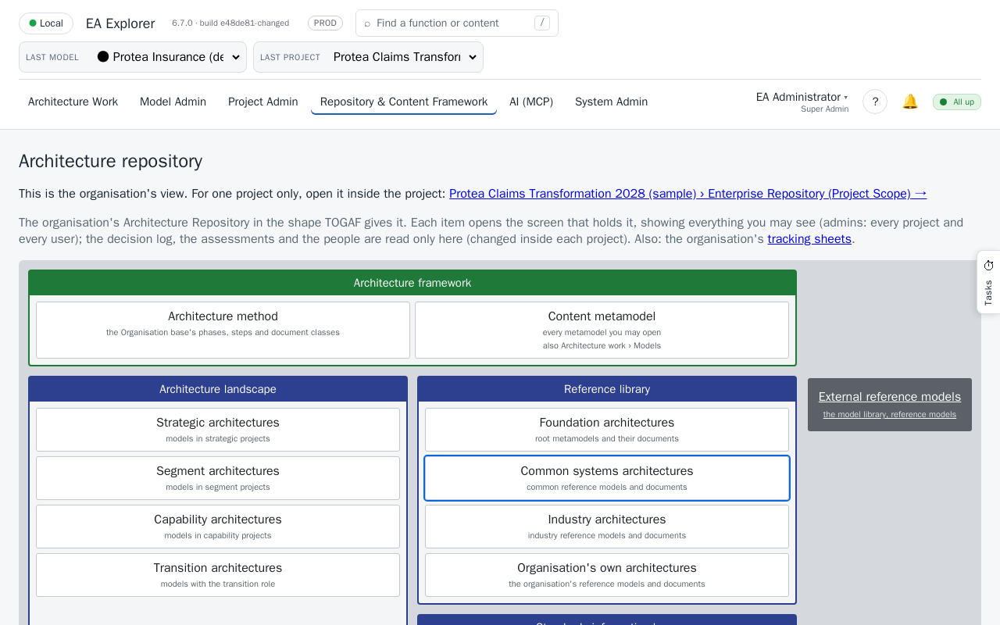

Find your way round the Architecture Repository
For: Practising architects, Project Admin
The landscape, reference library, governance log and standards in one place.

#/repositoryWhy do this
The Architecture Repository is where everything the practice produces lives. Knowing its parts means you find what exists before creating it again. See The Architecture Repository.
A project carries one pass of the ADM from vision to sign-off. Each task here is one of the steps along that route, and the project keeps them together so the whole story can be read later.
In TOGAF terms: The Architecture Repository. See EA Explorer and the TOGAF Standard.
The goal: You find your way round the whole architecture record.
Steps
- Open Enterprise Repository › The Architecture Repository.
- Pick a part: landscape, reference library, governance log, standards, capability.
- Open an item.